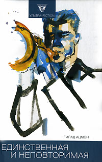
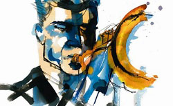

Гилад Ацмон • Единственная и неповторимая • Перевод: Алиса Шамир • ultra.fiction • 06.09.2006

Гилад Ацмон, саксофонист и автор пламенных политических статей, радикальный современный философ и писатель, родился и вырос в Израиле, живет и работает в Лондоне. Себя называет палестинцем, говорящим на иврите. Любимое занятие – разоблачать мифы современности. В настоящем романе-гротеске речь идет о якобы неуязвимой израильской разведке и неизбывном желании израильтян чувствовать себя преследуемыми жертвами. Ацмон делает с мифом о Мосаде то, что Пелевин сделал с советской космонавтикой в повести «Омон Ра», а карикатуры на деятелей израильской истории – от Давида Бен Гуриона до Ариэля Шарона – могут составить достойную конкуренцию графу Хрущеву и Сталину из «Голубого сала» Владимира Сорокина.
ПРЕССА И КОНТЕКСТ
Антисемит по праву (Ян Левченко, Gazeta.ru, 25.10.2006)

Джаз, политические провокации и жесткая эротика в романе «Единственная и неповторимая» Гилада Ацмона – израильского саксофониста, ненавидящего сионизм.
Гилад Ацмон преуспел во многом. Музыка, политика, литература – везде он успел добиться успеха, но нигде не стал своим, кроме музыки, которую трудно нагрузить идеологией. Впрочем, его самый известный сольный альбом «Exile» («Изгнание»), в 2003 году названный лучшим в джазовой номинации рейтинга BBC, построен как синтез еврейских мелодий и арабских текстов. Радует это, естественно, только европейцев с их смехотворными идеями общего дома. В длинном списке совместных проектов Ацмона – Йен Дьюри, Шинед О`Коннор, Офра Хаза, The Pogues и Laibach. Музыкантам все равно, пишет ли их одаренный коллега что-то, кроме музыки. А вот соплеменникам не все равно. Они клеймят Ацмона арабским прихвостнем и расистом, отрицающим Холокост.
«Для меня Холокост – это не вопрос о мере преступления, но один из моральных уроков, которые история преподает тем, кто учится жить среди других».
Более десяти лет Атцмон пишет скандальную публицистику, где увлеченно ругает историческую родину. В 2001 году вышел его первый роман «Учитель заблудших». В отзыве на русское издание романа газета «Лехаим» назвала его «жидким удобрением». Перевод действительно оставлял желать лучшего: Ацмону приписали в фамилию еще одну букву и превратили в косноязычного клона Фредерика Бегбедера. Происхождение прочих претензий не требует комментариев. О втором романе «Единственная и неповторимая» (2005) лондонский «Тайм Аут» писал, что это место, где легендарный двойной агент Мордехай Вануну, когда-то сдавший англичанам ядерную программу Израиля, встречается с персонажами фильма «Американский пирог».
Музыка, секс и шпионаж образуют здесь настоящий коктейль Молотова. Что на этот раз с успехом передал переводчик.
Прием, на котором строится текст, известен с древних времен. Якобы подошел к Атцмону в пражском джаз-клубе некто Берд Стрингштейн и осведомился, не заинтересует ли того «изыскание сугубо личного характера», тесно связанное с тематикой романа «Учитель заблудших». Так автор оказался в роли публикатора, чье присутствие в тексте ограничено постраничными комментариями – впрочем, весьма красноречивыми: «гой – «нееврей» (ивр.). Уничижительное название любого человека, коему не посчастливилось родиться евреем».
Вся история с разных точек зрения рассказывается ее бывшими участниками, отвечающими на вопросы Берда. Это бывший музыкальный продюсер Аврум Штиль – неграмотный, но хитрый циник, наделенный остроумием Вуди Аллена; его опять-таки бывший подопечный Дани Зильбер – гениальный трубач, который доводил своей игрой до оргазма сотни женщин, но всю жизнь любил одну-единственную; и наконец она сама, Сабрина Хофштетер, бывший агент израильской разведки, которая тоже всю жизнь любила своего трубача, хотя они занимались любовью каких-то четверть часа и больше никогда друг к другу не прикасались.
Никто не думал, что эта встреча будет значить так много.
Сабрине всего-то и нужно было, чтобы Аврум спрятал в одном из кофров от контрабаса бывшего эсесовца, которого она сама выследила по заданию родных спецслужб. Аврум был в курсе – иначе зачем его оркестр колесит по миру с таким количеством контрабасов! Не в курсе был только Дани, чьи длинные ноты заставляли девушек бросаться трусиками. Вокруг бедняги-музыканта творилось черт знает что ради процветания Израиля и еврейского народа, о чем заботились, в частности, его менеджер и его любовь. Мир не очень пригляден – таким откровением никого не удивишь. Разве что Дани Зильбер расстроился бы, узнав, что его музыка нужна не столько девочкам, сколько штатским службистам.
«Израильская идентичность обуяна поиском ультимативного отмщения», – писал Ацмон в заметке о смерти Ясира Арафата. События романа – иллюстрация этого заявления.
Из тех евреев, чье мнение важно по обе стороны Атлантики, в последнее время лишь Стивен Спилберг осмелился усомниться в том, что все средства хороши, когда решается судьба избранного народа. На то, в каком свете выставлена разведслужба «Моссад» в фильме «Мюнхен», успели крепко обидеться в Тель-Авиве. Инвективы Ацмона менее корректны и более контрастны. Все как в известной формуле, только вместо наркотиков – политика, вместо рок-н-ролла – джаз, а секса – хоть отбавляй, начиная с застенчивых фантазий Дани и заканчивая откровениями грудастой разведчицы Сабрины.
В конце романа Берд поясняет, что пишет диссертацию – у него большие научные амбиции. Для официальной мотивировки его «изыскания» вполне достаточно. Но есть еще одна причина – основная, о которой стоит узнать из книги. Потому что Ацмон – мастер рассказывать истории. Потому что политика уходит, а музыка остается.
http://www.gazeta.ru/culture/2006/10/23/a_963377.shtml
В самом сердце дискурса. Танцы в кругу пламенных сионистов (Александра Смирнова, exlibris.ng.ru, 19.01.2007)
Гилад Ацмон (р. 1963) – джазовый музыкант, работавший, кроме собственного джаз-бэнда, с Шинед О`Коннор, а также группами «The Pogues» и «Laibach». Родился в Израиле, но покинул его в 1992 году и перебрался в Великобританию. Автор провокационных статей, яростно критикующих политику Израиля. Называет себя «ивритоязычным палестинцем» и выступает «за освобождение палестинского народа». Наконец, автор двух романов на иврите – «Путеводитель заблудших» и «Единственная и неповторимая» («My one and only love»), переведенных на 17 языков.
С самого начала автор как бы устраняется из текста, отводя себе роль публикатора. Его старый приятель Берд Стригнтштейн, тоже музыкант, передает ему в пражском джаз-клубе «изыскание сугубо личного характера», тесно связанное с предыдущим романом. «Изыскание» представляет собой распечатки интервью на иврите и множество аудиокассет. Выбор приема понятен, так как Ацмону приятно и удобно иметь дело со звукозаписями – привычным материалом. Далее перед нами предстают три гротескных образа, каждый из которых рассказывает Берду свой вариант истории, призванной разоблачить миф о всемогуществе «Моссада». Дани Зильбер – гениальный трубач, выдающий предельно сексуальные ноты; юные девушки и зрелые дамы забрасывают его лифчиками и чулками и жаждут встречи наедине. Застенчивый и робкий, он влюбляется в агента израильской разведки Сабрину Хофштетер, роскошную большегрудую блондинку. Сабрине же нужно провезти в кофре от контрабаса бывшего эсэсовца, которого она самолично выследила. Естественно, это ей удается – при помощи продюсера Дани, оборотистого и циничного Аврума Штиля, который, по словам своего подопечного, «первым осознал огромный коммерческий потенциал Холокоста». Дани и Сабрина увиделись только один раз и даже толком не познали друг друга, но успели полюбить. Они взахлеб рассказывают об этом Берду, и пожилая Сабрина, перевозбудившись, даже отдается интервьюеру… В конце концов Берд выясняет, что является сыном Дани и Сабрины. Прямо сценарий для шпионской комедии средней руки.
Впрочем, сюжет ацмоновского романа мог бы быть каким угодно – он не так важен. Жанр «живых мемуаров» отчасти оправдывает затянутость повествования, проникнутого иронией по отношению ко всему еврейскому. «Добрый папа» Аврум не посвящает своего неприспособленного к жизни «сыночка» Дани в то, какая вокруг него варится разведывательная каша – дело музыканта играть и приносить прибыль. Сабрина в совершенстве овладела еврейскими секретами обольщения, но наотрез отказывается раскрыть главный – «метод Деборы», упоминая только, что «Эсфирь применяла его накануне Пурима». Напряжение тексту придают едкие комментарии типа «танцевать хору очень просто: большая группа пламенных сионистов формирует широкий круг, а потом… начинает скакать – два шага вперед и три назад… сионизм – это движение вспять». Но самая интересная часть книги – это все же интервью с автором, в котором четко артикулированы его взгляды.
«Религия Холокоста – это сердцевина либерально-демократического дискурса… смысл Холокоста как исторического события утратил значение». Во Франции или в Германии за такие слова Ацмон угодил бы за решетку. Ортодоксы обвиняют его во всех смертных грехах. Еврею, отслужившему в еврейской армии, не положено покушаться на великий миф о Катастрофе. Но любой человек, делающий подобные заявления, обречен на внимание публики – и горячую симпатию определенной ее части. В туманном Альбионе ему, видимо, ничего не грозит. Можно спокойно играть джаз на саксофоне, кларнете и флейте. Можно писать статьи, вызывающие раздражение и гнев «пламенных сионистов» и выкладывать их на своем сайте. А вот романы, судя по данной книге, создавать совсем не обязательно, так как публицист и писатель – не совсем одно и то же. Да и солнечная Палестина с равными для всех правами, «земля обетованная» Ацмона, не становится от этого ближе.